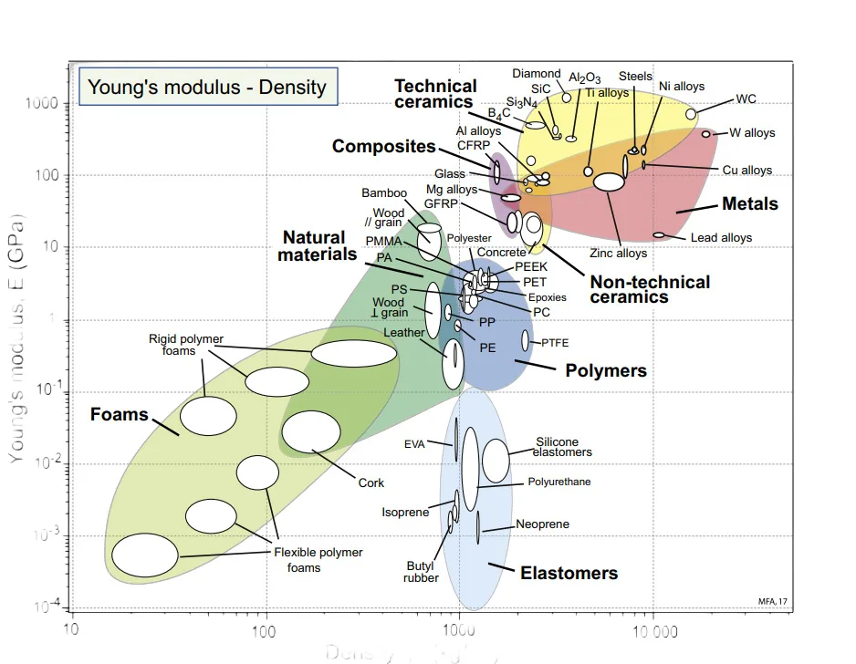
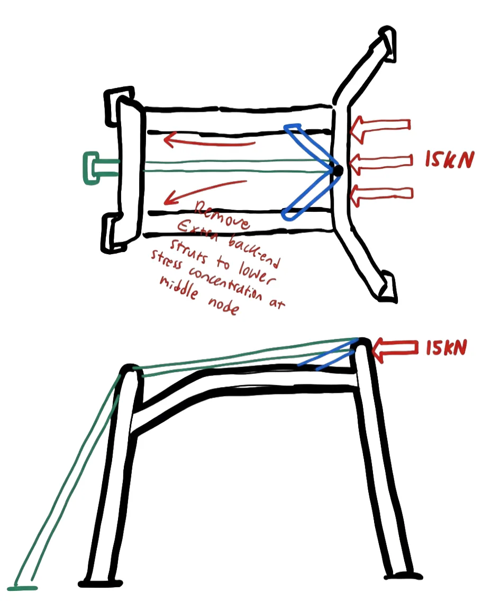
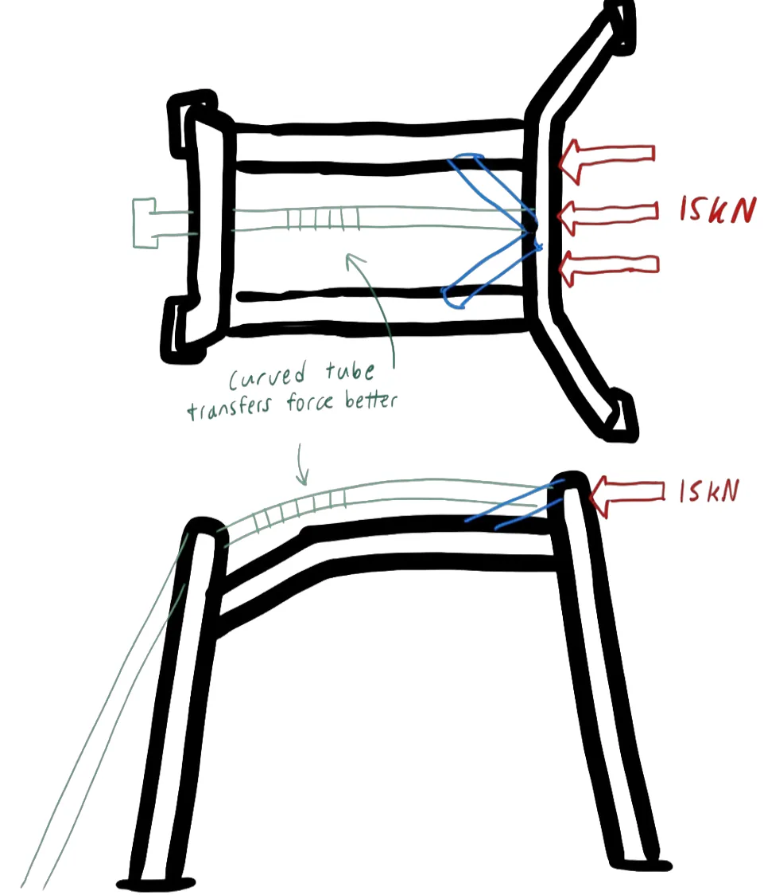
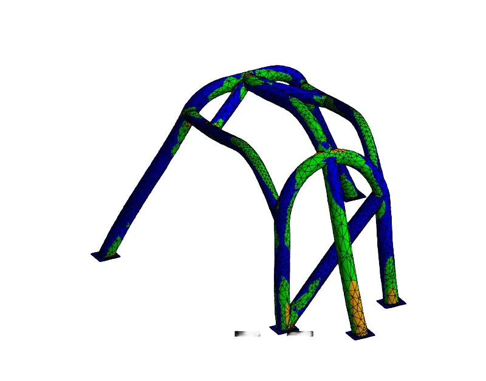

01Design brief
- Objective
- Minimize the product of maximum deflection and weight, keeping weight down and stiffness up.
- Constraints
- Safety factor of at least 1
- Material must be metal (American Solar Challenge regulations)
- The occupant’s head space must not be impeded
- Assumptions
- A 15 kN load on the horizontal section of the front roll cage frame
- The existing, incomplete roll cage could not be altered
02Material selection
I used Ashby charts to compare aluminum, titanium, nickel, and steel alloys on Young’s modulus-to-density ratio, yield strength, and fracture toughness. Steels offered some of the highest fracture toughness and yield strengths, a high modulus-to-density ratio, and reasonable cost and manufacturability.
Between the two most common roll cage steels, mild steel (AISI 1020) and chromoly (AISI 4130), the densities are nearly identical, but chromoly has a higher yield strength and Young’s modulus. Mild steel is cheaper, but AISI 4130 allowed for minimal weight and deflection while staying affordable, so it became the material choice.


03Structural design
The goal was to support the 15 kN front load without failure and with minimal deflection, adding as little weight as possible.
- Diagonal tubes (1.25 in × 0.12 in) direct stress into the side struts.
- A center tube (1.50 in × 0.12 in) supports the central load and curves to distribute stress onto the rear frame.
- A rear fifth strut (1.50 in × 0.12 in) supports the rear frame and spreads the moment reaction across three rear fixed supports.
- Large-radius tubes increase the area moment of inertia for better bending resistance per pound. The 1.50 in and 1.25 in × 0.12 in sizes also match the existing geometry, which reduces manufacturing complexity and cost.




04FEA
I modeled the cage in SolidWorks and ran the FEA in Ansys Structural using a custom AISI 4130 material, created by editing the default structural steel properties. After mesh failures, the mesh error limits were changed from “aggressive mechanical” to “standard mechanical.”
We also simulated modified designs with different tube diameters. Each one scored worse on weight × deflection than the final design.


05Results
- Achieved a minimum safety factor of 1.86 under the 15 kN load.
- Maximum deflection of only 0.049 in, at a total weight of 26.08 lb.
- Presented the design and material selection research to the team’s mechanical engineering group.